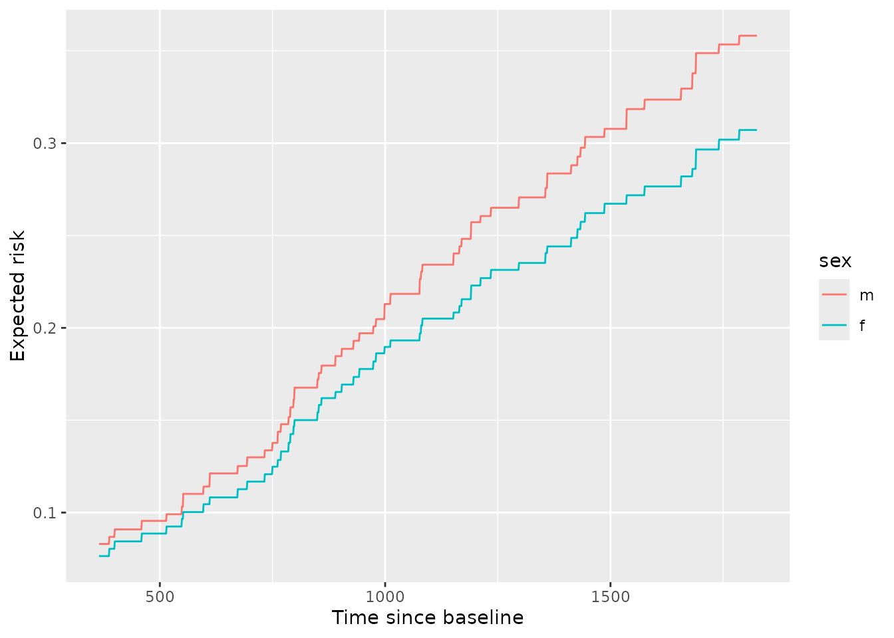
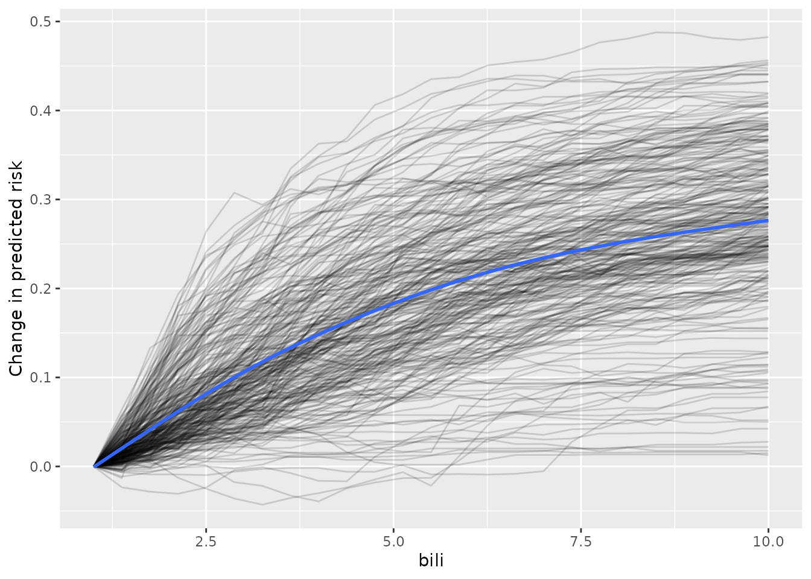

Partial dependence (PD)
Partial dependence (PD) shows the expected prediction from a model as a function of a single predictor or multiple predictors. The expectation is marginalized over the values of all other predictors, giving something like a multivariable adjusted estimate of the model’s prediction.
You can compute PD and individual conditional expectation (ICE) in three ways:
using in-bag predictions for the training data. In-bag PD indicates relationships that the model has learned during training. This is helpful if your goal is to interpret the model.
using out-of-bag predictions for the training data. Out-of-bag PD indicates relationships that the model has learned during training but using the out-of-bag data simulates application of the model to new data. This is helpful if you want to test your model’s reliability or fairness in new data but you don’t have access to a large testing set.
using predictions for a new set of data. New data PD shows how the model predicts outcomes for observations it has not seen. This is helpful if you want to test your model’s reliability or fairness.
Classification
Begin by fitting an oblique classification random forest:
set.seed(329)
index_train <- sample(nrow(penguins_orsf), 150)
penguins_orsf_train <- penguins_orsf[index_train, ]
penguins_orsf_test <- penguins_orsf[-index_train, ]
fit_clsf <- orsf(data = penguins_orsf_train,
formula = species ~ .)Compute PD using out-of-bag data for
flipper_length_mm = c(190, 210).
pred_spec <- list(flipper_length_mm = c(190, 210))
pd_oob <- orsf_pd_oob(fit_clsf, pred_spec = pred_spec)
pd_oob
#> class flipper_length_mm mean lwr medn upr
#> 1: Adelie 190 0.6182417 0.206899034 0.75537171 0.9796439
#> 2: Adelie 210 0.4348386 0.019519733 0.56802082 0.8620694
#> 3: Chinstrap 190 0.2114905 0.018420139 0.15561560 0.7174734
#> 4: Chinstrap 210 0.1806274 0.020409141 0.09928047 0.6990198
#> 5: Gentoo 190 0.1702678 0.001281382 0.02830728 0.5733438
#> 6: Gentoo 210 0.3845340 0.072260715 0.20258335 0.9519486Note that predicted probabilities are returned for each class and
probabilities in the mean column sum to 1 if you take the
sum over each class at a specific value of the pred_spec
variables. For example,
sum(pd_oob[flipper_length_mm == 190, mean])
#> [1] 1But this isn’t the case for the median predicted probability!
sum(pd_oob[flipper_length_mm == 190, medn])
#> [1] 0.9392946Regression
Begin by fitting an oblique regression random forest:
set.seed(329)
index_train <- sample(nrow(penguins_orsf), 150)
penguins_orsf_train <- penguins_orsf[index_train, ]
penguins_orsf_test <- penguins_orsf[-index_train, ]
fit_regr <- orsf(data = penguins_orsf_train,
formula = bill_length_mm ~ .)Compute PD using new data for
flipper_length_mm = c(190, 210).
pred_spec <- list(flipper_length_mm = c(190, 210))
pd_new <- orsf_pd_new(fit_regr,
pred_spec = pred_spec,
new_data = penguins_orsf_test)
pd_new
#> flipper_length_mm mean lwr medn upr
#> 1: 190 42.96571 37.09805 43.69769 48.72301
#> 2: 210 45.66012 40.50693 46.31577 51.65163You can also let pred_spec_auto pick reasonable values
like so:
pred_spec = pred_spec_auto(species, island, body_mass_g)
pd_new <- orsf_pd_new(fit_regr,
pred_spec = pred_spec,
new_data = penguins_orsf_test)
pd_new
#> species island body_mass_g mean lwr medn upr
#> 1: Adelie Biscoe 3200 40.31374 37.24373 40.31967 44.22824
#> 2: Chinstrap Biscoe 3200 45.10582 42.63342 45.10859 47.60119
#> 3: Gentoo Biscoe 3200 42.81649 40.19221 42.55664 46.84035
#> 4: Adelie Dream 3200 40.16219 36.95895 40.34633 43.90681
#> 5: Chinstrap Dream 3200 46.21778 43.53954 45.90929 49.19173
#> 6: Gentoo Dream 3200 42.60465 39.89647 42.63520 46.28769
#> 7: Adelie Torgersen 3200 39.91652 36.80227 39.79806 43.68842
#> 8: Chinstrap Torgersen 3200 44.27807 41.95470 44.40742 46.68848
#> 9: Gentoo Torgersen 3200 42.09510 39.49863 41.80049 45.81833
#> 10: Adelie Biscoe 3550 40.77971 38.04027 40.59561 44.57505
#> 11: Chinstrap Biscoe 3550 45.81304 43.52102 45.73116 48.36366
#> 12: Gentoo Biscoe 3550 43.31233 40.77355 43.03077 47.22936
#> 13: Adelie Dream 3550 40.77741 38.07399 40.78175 44.37273
#> 14: Chinstrap Dream 3550 47.30926 44.80493 46.77540 50.47092
#> 15: Gentoo Dream 3550 43.26955 40.86119 43.16204 46.89190
#> 16: Adelie Torgersen 3550 40.25780 37.35251 40.07871 44.04576
#> 17: Chinstrap Torgersen 3550 44.77911 42.60161 44.81944 47.14986
#> 18: Gentoo Torgersen 3550 42.49520 39.95866 42.14160 46.26237
#> 19: Adelie Biscoe 3975 41.61744 38.94515 41.36634 45.38752
#> 20: Chinstrap Biscoe 3975 46.59363 44.59970 46.44923 49.11457
#> 21: Gentoo Biscoe 3975 44.07857 41.60792 43.74562 47.85109
#> 22: Adelie Dream 3975 41.50511 39.06187 41.24741 45.13027
#> 23: Chinstrap Dream 3975 48.14978 45.87390 47.54867 51.50683
#> 24: Gentoo Dream 3975 44.01928 41.70577 43.84099 47.50470
#> 25: Adelie Torgersen 3975 40.94764 38.12519 40.66759 44.73689
#> 26: Chinstrap Torgersen 3975 45.44820 43.49986 45.44036 47.63243
#> 27: Gentoo Torgersen 3975 43.13791 40.70628 42.70627 46.87306
#> 28: Adelie Biscoe 4700 42.93914 40.48463 42.44768 46.81756
#> 29: Chinstrap Biscoe 4700 47.18517 45.40866 47.07739 49.55747
#> 30: Gentoo Biscoe 4700 45.32541 43.08173 44.93498 49.23391
#> 31: Adelie Dream 4700 42.73806 40.44229 42.22226 46.49936
#> 32: Chinstrap Dream 4700 48.37278 46.34335 48.00781 51.18955
#> 33: Gentoo Dream 4700 45.09132 42.88328 44.79530 48.82180
#> 34: Adelie Torgersen 4700 42.09349 39.72074 41.56168 45.68838
#> 35: Chinstrap Torgersen 4700 46.16807 44.38410 46.09525 48.35127
#> 36: Gentoo Torgersen 4700 44.31621 42.18968 43.81773 47.98024
#> 37: Adelie Biscoe 5300 43.89769 41.43335 43.28504 48.10892
#> 38: Chinstrap Biscoe 5300 47.53721 45.66038 47.52770 49.88701
#> 39: Gentoo Biscoe 5300 46.16115 43.81722 45.59309 50.57469
#> 40: Adelie Dream 5300 43.59846 41.25825 43.24518 47.46193
#> 41: Chinstrap Dream 5300 48.48139 46.36282 48.25679 51.02996
#> 42: Gentoo Dream 5300 45.91819 43.62832 45.54110 49.91622
#> 43: Adelie Torgersen 5300 42.92879 40.66576 42.31072 46.76406
#> 44: Chinstrap Torgersen 5300 46.59576 44.80400 46.49196 49.03906
#> 45: Gentoo Torgersen 5300 45.11384 42.95190 44.51289 49.27629
#> species island body_mass_g mean lwr medn uprBy default, all combinations of all variables are used. However, you can also look at the variables one by one, separately, like so:
pd_new <- orsf_pd_new(fit_regr,
expand_grid = FALSE,
pred_spec = pred_spec,
new_data = penguins_orsf_test)
pd_new
#> variable value level mean lwr medn upr
#> 1: species NA Adelie 41.90271 37.10417 41.51723 48.51478
#> 2: species NA Chinstrap 47.11314 42.40419 46.96478 51.51392
#> 3: species NA Gentoo 44.37038 39.87306 43.89889 51.21635
#> 4: island NA Biscoe 44.21332 37.22711 45.27862 51.21635
#> 5: island NA Dream 44.43354 37.01471 45.57261 51.51392
#> 6: island NA Torgersen 43.29539 37.01513 44.26924 49.84391
#> 7: body_mass_g 3200 <NA> 42.84625 37.03978 43.95991 49.19173
#> 8: body_mass_g 3550 <NA> 43.53326 37.56730 44.43756 50.47092
#> 9: body_mass_g 3975 <NA> 44.30431 38.31567 45.22089 51.50683
#> 10: body_mass_g 4700 <NA> 45.22525 39.88199 46.34680 51.18955
#> 11: body_mass_g 5300 <NA> 45.91412 40.84742 46.95327 51.48851And you can also bypass all the bells and whistles by using your own
data.frame for a pred_spec. (Just make sure
you request values that exist in the training data.)
custom_pred_spec <- data.frame(species = 'Adelie',
island = 'Biscoe')
pd_new <- orsf_pd_new(fit_regr,
pred_spec = custom_pred_spec,
new_data = penguins_orsf_test)
pd_new
#> species island mean lwr medn upr
#> 1: Adelie Biscoe 41.98024 37.22711 41.65252 48.51478Survival
Begin by fitting an oblique survival random forest:
set.seed(329)
index_train <- sample(nrow(pbc_orsf), 150)
pbc_orsf_train <- pbc_orsf[index_train, ]
pbc_orsf_test <- pbc_orsf[-index_train, ]
fit_surv <- orsf(data = pbc_orsf_train,
formula = Surv(time, status) ~ . - id,
oobag_pred_horizon = 365.25 * 5)Compute PD using in-bag data for
bili = c(1,2,3,4,5):
pd_train <- orsf_pd_inb(fit_surv, pred_spec = list(bili = 1:5))
pd_train
#> pred_horizon bili mean lwr medn upr
#> 1: 1826.25 1 0.2575450 0.02234786 0.1334170 0.8917942
#> 2: 1826.25 2 0.3130469 0.06853733 0.1906695 0.9203372
#> 3: 1826.25 3 0.3711963 0.11409793 0.2582027 0.9416791
#> 4: 1826.25 4 0.4248968 0.15648381 0.3334579 0.9591581
#> 5: 1826.25 5 0.4671699 0.20123406 0.3855137 0.9655296If you don’t have specific values of a variable in mind, let
pred_spec_auto pick for you:
pd_train <- orsf_pd_inb(fit_surv, pred_spec_auto(bili))
pd_train
#> pred_horizon bili mean lwr medn upr
#> 1: 1826.25 0.590 0.2493753 0.02035041 0.1250263 0.8823385
#> 2: 1826.25 0.725 0.2517103 0.02060111 0.1281814 0.8836536
#> 3: 1826.25 1.500 0.2807082 0.03964900 0.1601715 0.9040617
#> 4: 1826.25 3.500 0.3968251 0.13431288 0.2934565 0.9501230
#> 5: 1826.25 7.210 0.5352155 0.27869513 0.4658256 0.9782084Specify pred_horizon to get PD at each value:
pd_train <- orsf_pd_inb(fit_surv, pred_spec_auto(bili),
pred_horizon = seq(500, 3000, by = 500))
pd_train
#> pred_horizon bili mean lwr medn upr
#> 1: 500 0.590 0.06217164 0.0004433990 0.008765301 0.5918852
#> 2: 1000 0.590 0.14282695 0.0057937418 0.056509484 0.7381953
#> 3: 1500 0.590 0.20944972 0.0136094784 0.092379507 0.8577223
#> 4: 2000 0.590 0.26917477 0.0230476894 0.146421502 0.8918696
#> 5: 2500 0.590 0.31901518 0.0631155452 0.203673185 0.9034059
#> 6: 3000 0.590 0.39244000 0.0911566314 0.302726475 0.9239494
#> 7: 500 0.725 0.06287876 0.0004462367 0.009001904 0.5980510
#> 8: 1000 0.725 0.14409310 0.0063321712 0.056833294 0.7448126
#> 9: 1500 0.725 0.21143724 0.0140736894 0.093685200 0.8597396
#> 10: 2000 0.725 0.27150368 0.0235448705 0.147022224 0.8940497
#> 11: 2500 0.725 0.32014805 0.0626303822 0.203946002 0.9073003
#> 12: 3000 0.725 0.39518173 0.0911457406 0.308428469 0.9252028
#> 13: 500 1.500 0.06712295 0.0012717884 0.011028398 0.6240769
#> 14: 1000 1.500 0.15802582 0.0114789623 0.068332010 0.7683888
#> 15: 1500 1.500 0.23407183 0.0287320952 0.117289745 0.8789647
#> 16: 2000 1.500 0.30235436 0.0467927208 0.180096425 0.9143235
#> 17: 2500 1.500 0.35354874 0.0845866747 0.238415966 0.9265099
#> 18: 3000 1.500 0.43604287 0.1311103304 0.348078730 0.9438196
#> 19: 500 3.500 0.08677320 0.0052087533 0.028244374 0.6741102
#> 20: 1000 3.500 0.22427808 0.0519179775 0.139857107 0.8277541
#> 21: 1500 3.500 0.32788654 0.0901983241 0.217982772 0.9371150
#> 22: 2000 3.500 0.41708208 0.1445328597 0.313224605 0.9566091
#> 23: 2500 3.500 0.49334883 0.2195110942 0.402932569 0.9636221
#> 24: 3000 3.500 0.56094391 0.2647541788 0.503509668 0.9734948
#> 25: 500 7.210 0.12591911 0.0220920570 0.063283130 0.7522611
#> 26: 1000 7.210 0.32642477 0.1353851175 0.259731888 0.8879218
#> 27: 1500 7.210 0.46409472 0.2181840827 0.387142510 0.9700903
#> 28: 2000 7.210 0.55116942 0.2912654769 0.484118150 0.9811496
#> 29: 2500 7.210 0.62008114 0.3709845684 0.568822502 0.9844945
#> 30: 3000 7.210 0.68030697 0.4247511750 0.646009789 0.9888637
#> pred_horizon bili mean lwr medn uprOne variable, moving horizon
For the next few sections, we update orsf_fit to include
all the data in pbc_orsf instead of just the training
sample:
# a rare case of modify_in_place = TRUE
orsf_update(fit_surv,
data = pbc_orsf,
modify_in_place = TRUE)
fit_surv
#> ---------- Oblique random survival forest
#>
#> Linear combinations: Accelerated Cox regression
#> N observations: 276
#> N events: 111
#> N trees: 500
#> N predictors total: 17
#> N predictors per node: 5
#> Average leaves per tree: 21.038
#> Min observations in leaf: 5
#> Min events in leaf: 1
#> OOB stat value: 0.84
#> OOB stat type: Harrell's C-index
#> Variable importance: anova
#>
#> -----------------------------------------What if the effect of a predictor varies over time? Partial dependence can show this.
pd_sex_tv <- orsf_pd_oob(fit_surv,
pred_spec = pred_spec_auto(sex),
pred_horizon = seq(365, 365*5))
ggplot(pd_sex_tv) +
aes(x = pred_horizon, y = mean, color = sex) +
geom_line() +
labs(x = 'Time since baseline',
y = 'Expected risk')
From inspection, we can see that males have higher risk than females and the difference in that risk grows over time. This can also be seen by viewing the ratio of expected risk over time:
library(data.table)
ratio_tv <- pd_sex_tv[
, .(ratio = mean[sex == 'm'] / mean[sex == 'f']), by = pred_horizon
]
ggplot(ratio_tv, aes(x = pred_horizon, y = ratio)) +
geom_line(color = 'grey') +
geom_smooth(color = 'black', se = FALSE) +
labs(x = 'time since baseline',
y = 'ratio in expected risk for males versus females')
To get a view of PD for any number of variables in the training data,
use orsf_summarize_uni(). This function computes out-of-bag
PD for the most important n_variables and returns a nicely
formatted view of the output:
pd_smry <- orsf_summarize_uni(fit_surv, n_variables = 4)
pd_smry
#>
#> -- ascites (VI Rank: 1) ------------------------
#>
#> |---------------- Risk ----------------|
#> Value Mean Median 25th % 75th %
#> 0 0.3083328 0.1985589 0.06581247 0.5241336
#> 1 0.4702396 0.3975953 0.27481738 0.6564321
#>
#> -- bili (VI Rank: 2) ---------------------------
#>
#> |---------------- Risk ----------------|
#> Value Mean Median 25th % 75th %
#> 0.60 0.2356543 0.1536301 0.05872720 0.3719578
#> 0.80 0.2398021 0.1609720 0.06167673 0.3776136
#> 1.40 0.2613612 0.1809950 0.07893386 0.4064484
#> 3.52 0.3702763 0.3118827 0.17050712 0.5447088
#> 7.25 0.4780580 0.4406202 0.29442977 0.6434075
#>
#> -- edema (VI Rank: 3) --------------------------
#>
#> |---------------- Risk ----------------|
#> Value Mean Median 25th % 75th %
#> 0 0.3035731 0.1840849 0.06509174 0.5228237
#> 0.5 0.3558716 0.2649457 0.11132293 0.5831396
#> 1 0.4693915 0.3961470 0.28211662 0.6331870
#>
#> -- copper (VI Rank: 4) -------------------------
#>
#> |---------------- Risk ----------------|
#> Value Mean Median 25th % 75th %
#> 25.5 0.2632768 0.1622871 0.05581251 0.4308234
#> 42.8 0.2707739 0.1703028 0.05887747 0.4418590
#> 74.0 0.2908707 0.1940176 0.07155433 0.4768302
#> 129 0.3444258 0.2651729 0.11918406 0.5574967
#> 214 0.4245218 0.3577346 0.21408331 0.6238041
#>
#> Predicted risk at time t = 1826.25 for top 4 predictorsThis ‘summary’ object can be converted into a data.table
for downstream plotting and tables.
head(as.data.table(pd_smry))
#> variable importance Value Mean Median 25th % 75th %
#> 1: ascites 0.4960630 0 0.3083328 0.1985589 0.06581247 0.5241336
#> 2: ascites 0.4960630 1 0.4702396 0.3975953 0.27481738 0.6564321
#> 3: bili 0.4160074 0.60 0.2356543 0.1536301 0.05872720 0.3719578
#> 4: bili 0.4160074 0.80 0.2398021 0.1609720 0.06167673 0.3776136
#> 5: bili 0.4160074 1.40 0.2613612 0.1809950 0.07893386 0.4064484
#> 6: bili 0.4160074 3.52 0.3702763 0.3118827 0.17050712 0.5447088
#> pred_horizon level
#> 1: 1826.25 0
#> 2: 1826.25 1
#> 3: 1826.25 <NA>
#> 4: 1826.25 <NA>
#> 5: 1826.25 <NA>
#> 6: 1826.25 <NA>Multiple variables, jointly
Partial dependence can show the expected value of a model’s
predictions as a function of a specific predictor, or as a function of
multiple predictors. For instance, we can estimate predicted risk as a
joint function of bili, edema, and
trt:
pred_spec = pred_spec_auto(bili, edema, trt)
pd_bili_edema <- orsf_pd_oob(fit_surv, pred_spec)
ggplot(pd_bili_edema) +
aes(x = bili, y = medn, col = trt, linetype = edema) +
geom_line() +
labs(y = 'Expected predicted risk')
From inspection,
the model’s predictions indicate slightly lower risk for the placebo group, and these do not seem to change much at different values of
bilioredema.There is a clear increase in predicted risk with higher levels of
edemaand with higher levels ofbili-
the slope of predicted risk as a function of
biliappears highest among patients withedemaof 0.5. Is the effect ofbilimodified byedemabeing 0.5? A quick sanity check withcoxphsuggests there is.library(survival) pbc_orsf$edema_05 <- ifelse(pbc_orsf$edema == '0.5', 'yes', 'no') fit_cph <- coxph(Surv(time,status) ~ edema_05 * bili, data = pbc_orsf) anova(fit_cph) #> Analysis of Deviance Table #> Cox model: response is Surv(time, status) #> Terms added sequentially (first to last) #> #> loglik Chisq Df Pr(>|Chi|) #> NULL -550.19 #> edema_05 -546.83 6.7248 1 0.009508 ** #> bili -513.59 66.4689 1 3.555e-16 *** #> edema_05:bili -510.54 6.1112 1 0.013433 * #> --- #> Signif. codes: 0 '***' 0.001 '**' 0.01 '*' 0.05 '.' 0.1 ' ' 1
Find interactions using PD
Random forests are good at using interactions, but less good at
telling you about them. Use orsf_vint() to apply the method
for variable interaction scoring with PD described by Greenwell et al
(2018). This can take a little while if you have lots of predictors, so
setting verbose_progress = TRUE may be helpful.
vint_scores <- orsf_vint(fit_surv, verbose_progress = TRUE)
#> Computing dependence: 31%. ~ time remaining: 4 seconds.
#> Computing dependence: 63%. ~ time remaining: 2 seconds.
#> Computing dependence: 95%. ~ time remaining: 0 seconds.
#> Computing dependence: 100%.
vint_scores[1:5]
#> interaction score
#> 1: albumin..protime 1.1597307
#> 2: protime..stage 1.0710384
#> 3: copper..protime 0.7958742
#> 4: albumin..stage 0.7672757
#> 5: bili..stage 0.7619507Again we use a sanity check with coxph to see if these
interactions are detected using a standard test:
fit_cph <- coxph(Surv(time,status) ~ albumin * protime,
data = pbc_orsf)
anova(fit_cph)
#> Analysis of Deviance Table
#> Cox model: response is Surv(time, status)
#> Terms added sequentially (first to last)
#>
#> loglik Chisq Df Pr(>|Chi|)
#> NULL -550.19
#> albumin -526.29 47.801 1 4.717e-12 ***
#> protime -514.89 22.806 1 1.792e-06 ***
#> albumin:protime -511.76 6.252 1 0.01241 *
#> ---
#> Signif. codes: 0 '***' 0.001 '**' 0.01 '*' 0.05 '.' 0.1 ' ' 1
fit_cph <- update(fit_cph, . ~ stage * protime)
anova(fit_cph)
#> Analysis of Deviance Table
#> Cox model: response is Surv(time, status)
#> Terms added sequentially (first to last)
#>
#> loglik Chisq Df Pr(>|Chi|)
#> NULL -550.19
#> stage -528.61 43.1626 3 2.273e-09 ***
#> protime -516.05 25.1244 1 5.375e-07 ***
#> stage:protime -514.06 3.9822 3 0.2634
#> ---
#> Signif. codes: 0 '***' 0.001 '**' 0.01 '*' 0.05 '.' 0.1 ' ' 1
fit_cph <- update(fit_cph, . ~ copper * protime)
anova(fit_cph)
#> Analysis of Deviance Table
#> Cox model: response is Surv(time, status)
#> Terms added sequentially (first to last)
#>
#> loglik Chisq Df Pr(>|Chi|)
#> NULL -550.19
#> copper -524.72 50.9444 1 9.502e-13 ***
#> protime -513.02 23.3872 1 1.325e-06 ***
#> copper:protime -508.86 8.3216 1 0.003918 **
#> ---
#> Signif. codes: 0 '***' 0.001 '**' 0.01 '*' 0.05 '.' 0.1 ' ' 1Note: Caution is warranted when interpreting statistical hypotheses that are motivated by the same data they are tested with. Results like the p-values for interaction shown above should be interpreted as exploratory.
Individual conditional expectations (ICE)
Unlike partial dependence, which shows the expected prediction as a function of one or multiple predictors, individual conditional expectations (ICE) show the prediction for an individual observation as a function of a predictor.
Classification
Compute ICE using out-of-bag data for
flipper_length_mm = c(190, 210).
pred_spec <- list(flipper_length_mm = c(190, 210))
ice_oob <- orsf_ice_oob(fit_clsf, pred_spec = pred_spec)
ice_oob
#> id_variable id_row class flipper_length_mm pred
#> 1: 1 1 Adelie 190 0.92045213
#> 2: 1 2 Adelie 190 0.80427932
#> 3: 1 3 Adelie 190 0.84342550
#> 4: 1 4 Adelie 190 0.93514694
#> 5: 1 5 Adelie 190 0.97172229
#> ---
#> 896: 2 146 Gentoo 210 0.25779089
#> 897: 2 147 Gentoo 210 0.04806888
#> 898: 2 148 Gentoo 210 0.07926342
#> 899: 2 149 Gentoo 210 0.84597108
#> 900: 2 150 Gentoo 210 0.10191162There are two identifiers in the output:
id_variableis an identifier for the current value of the variable(s) that are in the data. It is redundant if you only have one variable, but helpful if there are multiple variables.id_rowis an identifier for the observation in the original data.
Note that predicted probabilities are returned for each class and each observation in the data. Predicted probabilities for a given observation and given variable value sum to 1. For example,
#> [1] 1Regression
Compute ICE using new data for
flipper_length_mm = c(190, 210).
pred_spec <- list(flipper_length_mm = c(190, 210))
ice_new <- orsf_ice_new(fit_regr,
pred_spec = pred_spec,
new_data = penguins_orsf_test)
ice_new
#> id_variable id_row flipper_length_mm pred
#> 1: 1 1 190 37.94483
#> 2: 1 2 190 37.61595
#> 3: 1 3 190 37.53681
#> 4: 1 4 190 39.49476
#> 5: 1 5 190 38.95635
#> ---
#> 362: 2 179 210 51.80471
#> 363: 2 180 210 47.27183
#> 364: 2 181 210 47.05031
#> 365: 2 182 210 50.39028
#> 366: 2 183 210 48.44774You can also let pred_spec_auto pick reasonable values
like so:
pred_spec = pred_spec_auto(species, island, body_mass_g)
ice_new <- orsf_ice_new(fit_regr,
pred_spec = pred_spec,
new_data = penguins_orsf_test)
ice_new
#> id_variable id_row species island body_mass_g pred
#> 1: 1 1 Adelie Biscoe 3200 37.78339
#> 2: 1 2 Adelie Biscoe 3200 37.73273
#> 3: 1 3 Adelie Biscoe 3200 37.71248
#> 4: 1 4 Adelie Biscoe 3200 40.25782
#> 5: 1 5 Adelie Biscoe 3200 40.04074
#> ---
#> 8231: 45 179 Gentoo Torgersen 5300 46.14559
#> 8232: 45 180 Gentoo Torgersen 5300 43.98050
#> 8233: 45 181 Gentoo Torgersen 5300 44.59837
#> 8234: 45 182 Gentoo Torgersen 5300 44.85146
#> 8235: 45 183 Gentoo Torgersen 5300 44.23710By default, all combinations of all variables are used. However, you can also look at the variables one by one, separately, like so:
ice_new <- orsf_ice_new(fit_regr,
expand_grid = FALSE,
pred_spec = pred_spec,
new_data = penguins_orsf_test)
ice_new
#> id_variable id_row variable value level pred
#> 1: 1 1 species NA Adelie 37.74136
#> 2: 1 2 species NA Adelie 37.42367
#> 3: 1 3 species NA Adelie 37.04598
#> 4: 1 4 species NA Adelie 39.89602
#> 5: 1 5 species NA Adelie 39.14848
#> ---
#> 2009: 5 179 body_mass_g 5300 <NA> 51.50196
#> 2010: 5 180 body_mass_g 5300 <NA> 47.27055
#> 2011: 5 181 body_mass_g 5300 <NA> 48.34064
#> 2012: 5 182 body_mass_g 5300 <NA> 48.75828
#> 2013: 5 183 body_mass_g 5300 <NA> 48.11020And you can also bypass all the bells and whistles by using your own
data.frame for a pred_spec. (Just make sure
you request values that exist in the training data.)
custom_pred_spec <- data.frame(species = 'Adelie',
island = 'Biscoe')
ice_new <- orsf_ice_new(fit_regr,
pred_spec = custom_pred_spec,
new_data = penguins_orsf_test)
ice_new
#> id_variable id_row species island pred
#> 1: 1 1 Adelie Biscoe 38.52327
#> 2: 1 2 Adelie Biscoe 38.32073
#> 3: 1 3 Adelie Biscoe 37.71248
#> 4: 1 4 Adelie Biscoe 41.68380
#> 5: 1 5 Adelie Biscoe 40.91140
#> ---
#> 179: 1 179 Adelie Biscoe 43.09493
#> 180: 1 180 Adelie Biscoe 38.79455
#> 181: 1 181 Adelie Biscoe 39.37734
#> 182: 1 182 Adelie Biscoe 40.71952
#> 183: 1 183 Adelie Biscoe 39.34501Survival
Compute ICE using in-bag data for
bili = c(1,2,3,4,5):
ice_train <- orsf_ice_inb(fit_surv, pred_spec = list(bili = 1:5))
ice_train
#> id_variable id_row pred_horizon bili pred
#> 1: 1 1 1826.25 1 0.9015162
#> 2: 1 2 1826.25 1 0.1019426
#> 3: 1 3 1826.25 1 0.6821646
#> 4: 1 4 1826.25 1 0.3623411
#> 5: 1 5 1826.25 1 0.1374271
#> ---
#> 1376: 5 272 1826.25 5 0.2650957
#> 1377: 5 273 1826.25 5 0.3065318
#> 1378: 5 274 1826.25 5 0.3503776
#> 1379: 5 275 1826.25 5 0.1652897
#> 1380: 5 276 1826.25 5 0.3549165If you don’t have specific values of a variable in mind, let
pred_spec_auto pick for you:
ice_train <- orsf_ice_inb(fit_surv, pred_spec_auto(bili))
ice_train
#> id_variable id_row pred_horizon bili pred
#> 1: 1 1 1826.25 0.60 0.89210440
#> 2: 1 2 1826.25 0.60 0.09186876
#> 3: 1 3 1826.25 0.60 0.65503431
#> 4: 1 4 1826.25 0.60 0.34622748
#> 5: 1 5 1826.25 0.60 0.13310425
#> ---
#> 1376: 5 272 1826.25 7.25 0.31258148
#> 1377: 5 273 1826.25 7.25 0.35478676
#> 1378: 5 274 1826.25 7.25 0.41559176
#> 1379: 5 275 1826.25 7.25 0.25301890
#> 1380: 5 276 1826.25 7.25 0.44533769Specify pred_horizon to get ICE at each value:
ice_train <- orsf_ice_inb(fit_surv, pred_spec_auto(bili),
pred_horizon = seq(500, 3000, by = 500))
ice_train
#> id_variable id_row pred_horizon bili pred
#> 1: 1 1 500 0.60 0.5949598
#> 2: 1 1 1000 0.60 0.7652137
#> 3: 1 1 1500 0.60 0.8751746
#> 4: 1 1 2000 0.60 0.9057135
#> 5: 1 1 2500 0.60 0.9231915
#> ---
#> 8276: 5 276 1000 7.25 0.2111306
#> 8277: 5 276 1500 7.25 0.3642278
#> 8278: 5 276 2000 7.25 0.4850492
#> 8279: 5 276 2500 7.25 0.5720362
#> 8280: 5 276 3000 7.25 0.6206786Multi-prediction horizon ice comes with minimal extra computational cost. Use a fine grid of time values and assess whether predictors have time-varying effects.
Visualizing ICE curves
Inspecting the ICE curves for each observation can help identify whether there is heterogeneity in a model’s predictions. I.e., does the effect of the variable follow the same pattern for all the data, or are there groups where the variable impacts risk differently?
I am going to turn off boundary checking in orsf_ice_oob
by setting boundary_checks = FALSE, and this will allow me
to generate ICE curves that go beyond the 90th percentile of
bili.
pred_spec <- list(bili = seq(1, 10, length.out = 25))
ice_oob <- orsf_ice_oob(fit_surv, pred_spec, boundary_checks = FALSE)
ice_oob
#> id_variable id_row pred_horizon bili pred
#> 1: 1 1 1826.25 1 0.8790861
#> 2: 1 2 1826.25 1 0.8132035
#> 3: 1 3 1826.25 1 0.6240238
#> 4: 1 4 1826.25 1 0.7461603
#> 5: 1 5 1826.25 1 0.5754091
#> ---
#> 6896: 25 272 1826.25 10 0.7018976
#> 6897: 25 273 1826.25 10 0.4606246
#> 6898: 25 274 1826.25 10 0.3347082
#> 6899: 25 275 1826.25 10 0.6046024
#> 6900: 25 276 1826.25 10 0.2789017For plots, it is helpful to scale the ICE data. I subtract the
initial value of predicted risk (i.e., when bili = 1) from
each observation’s conditional expectation values. So,
Every curve start at 0
-
The plot shows change in predicted risk as a function of
bili.ice_oob[, pred_subtract := rep(pred[id_variable==1], times=25)] ice_oob[, pred := pred - pred_subtract]
Now we can visualize the curves.
ggplot(ice_oob, aes(x = bili,
y = pred,
group = id_row)) +
geom_line(alpha = 0.15) +
labs(y = 'Change in predicted risk') +
geom_smooth(se = FALSE, aes(group = 1))
From inspection of the figure,
Most of the individual slopes cluster around the overall trend - Good!
A small number of individual slopes appear to be flat. It may be helpful to investigate this further.
Limitations of PD
Partial dependence has a number of known limitations and assumptions that users should be aware of (see Hooker, 2021). In particular, partial dependence is less intuitive when >2 predictors are examined jointly, and it is assumed that the feature(s) for which the partial dependence is computed are not correlated with other features (this is likely not true in many cases). Accumulated local effect plots can be used (see here) in the case where feature independence is not a valid assumption.
References
- Giles Hooker, Lucas Mentch, Siyu Zhou. Unrestricted Permutation forces Extrapolation: Variable Importance Requires at least One More Model, or There Is No Free Variable Importance. arXiv e-prints. 2021 Oct; arXiv-1905. URL: https://doi.org/10.48550/arXiv.1905.03151